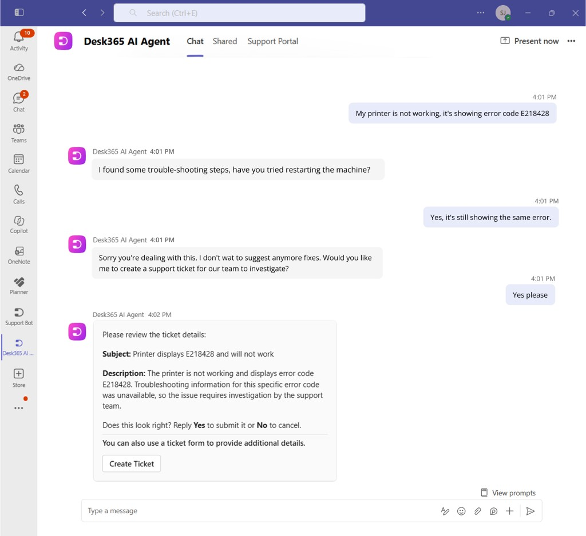

从问题到工单不必离开聊天
Desk365原来的Teams机器人已经能创建和追踪工单，本次十月三十一日发布增加的是从自然语言问题开始的AI入口。员工先描述问题，代理依据团队选择的知识内容回答；材料不足或问题仍未解决时，再追问、整理工单草稿，让员工查看后提交。工单建立后，分配、状态变化和人工回复回到同一聊天，审批请求与满意度调查也能在那里处理。这条流程减少了从对话搬运信息到门户的步骤，但并不表示AI替支持人员解决了所有复杂问题；被升级的事项仍交给服务团队继续处理。
Desk365 AI Agent for Microsoft Teams · 产品与开发者工具 · 原始发布

Desk365原来的Teams机器人已经能创建和追踪工单，本次十月三十一日发布增加的是从自然语言问题开始的AI入口。员工先描述问题，代理依据团队选择的知识内容回答；材料不足或问题仍未解决时，再追问、整理工单草稿，让员工查看后提交。工单建立后，分配、状态变化和人工回复回到同一聊天，审批请求与满意度调查也能在那里处理。这条流程减少了从对话搬运信息到门户的步骤，但并不表示AI替支持人员解决了所有复杂问题；被升级的事项仍交给服务团队继续处理。
新的AI工单表单按支持门户、网站聊天和Teams分别设置，每个渠道有默认表单，也可以建立多个专用表单。管理员给表单命名并写用途，代理据此选择较合适的一份，自动填写主题与描述；联系人仍可从下拉框换表单、修改内容后提交。自定义字段与附件让具体报修或权限请求携带所需材料，减少人工再次询问。选择表单是模型判断，不是硬性的业务验证；名称和描述含糊时，系统可能选错，因此把可见的切换入口留给提交者，比隐藏路由结果更有实际价值。
部署前，管理员在服务台设置里列出允许的邮箱域，只有匹配域的联系人能使用Teams代理；同域有多个服务台时，还要用服务台子域把请求送到正确位置。组织可以统一添加应用并固定到Teams侧栏，第三方应用被限制时需要Teams管理员放行。产品要求Plus或Premium计划且账户已启用AI。知识也不是整个公司网络自动可读：配置者选择知识库分类、网页、文件或问答，再分配给具体代理并测试。已有频道接入与知识库维护是不同工作，源文档变化后仍要检查同步和回答内容。
后台提供消息、升级和解决率等统计，但设置文档对“已解决消息”的定义是信心分数高于零点四，未升级也参与解决率的呈现。这些数字能帮助找出值得检查的会话，却不能单独证明员工问题已经解决。团队可查看近期对话、所耗AI额度和对应联系人，结合真实工单结果判断回答质量。同期更新还把自动化规则的创建、修改、开关及API工单操作写入审计日志，方便追查服务台行为。日志记录谁做了什么，与答案是否正确仍是两件事；这套产品的价值取决于知识维护和人工接管能否跟上。